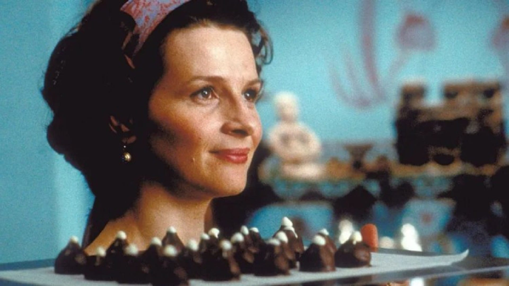
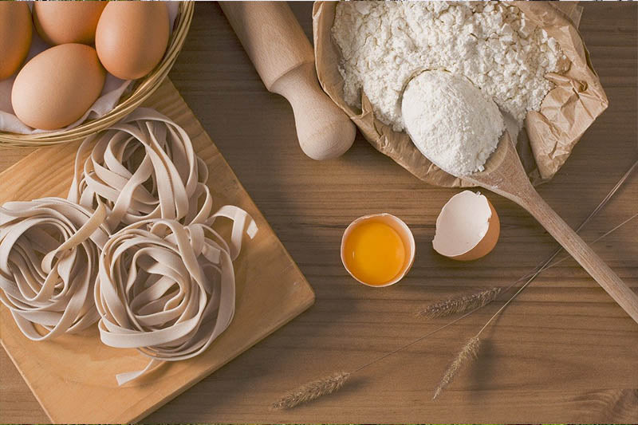
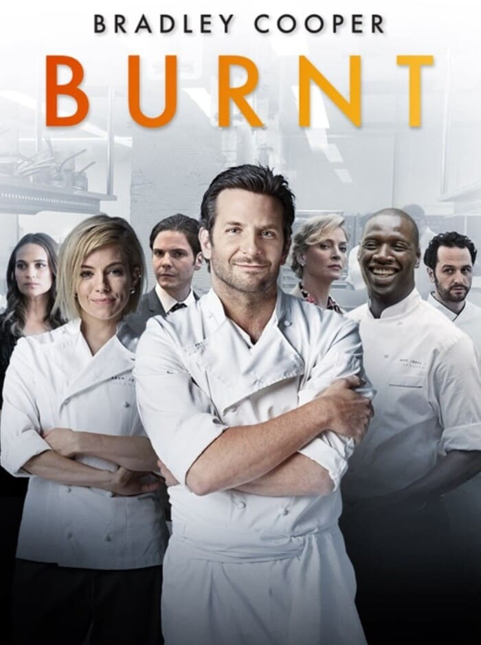

Dos artes que despiertan los mismos sentidos
Hay algo que el cine y la gastronomía comparten que va más allá de la casualidad: los dos trabajan con el tiempo, con la memoria y con las emociones que un estímulo sensorial puede desencadenar. Un plato bien construido y una escena bien filmada funcionan de la misma manera: crean una experiencia que persiste mucho después de que el plato se haya enfriado o de que los créditos hayan rodado. No es extraño que el séptimo arte haya encontrado en la cocina uno de sus escenarios más fértiles.
Lo que sorprende, cuando se repasa la historia de las grandes películas gastronómicas, es que la comida pocas veces es el tema real. Es el vehículo. En Como agua para chocolate la cocina es el único espacio de libertad de una mujer atrapada. En El festín de Babette es un acto de generosidad absoluta y silenciosa. En Ratatouille es el argumento más democrático que se puede imaginar: el talento no entiende de origen. Y en Tampopo es casi una filosofía de vida. El plato, en todas ellas, dice lo que el guión no puede decir.

La mesa como escenario: en el cine gastronómico, lo que se sirve siempre cuenta algo más que el plat
Cualquiera puede cocinar. Pero solo los más valientes se atreven a hacerlo genial.
Auguste Gusteau · Ratatouille (2007) · Brad Bird / Pixar
Siete películas que todo gourmet debería haber visto
No es un ranking de la mejor a la peor —eso, en gastronomía y en cine, es siempre una discusión sin ganador—. Es una selección comentada de siete títulos que, juntos, dibujan las diferentes formas en que el cine ha mirado a la cocina: con ternura, con obsesión, con humor, con distancia crítica y, en algún caso, con una melancolía que se instala en el estómago.
El festín de Babette (1987 · Gabriel Axel · Dinamarca)
El referente absoluto. Una cocinera francesa exiliada en un austero pueblo danés invierte el premio de la lotería entero en preparar un banquete para la comunidad que la acogió. Nadie en la mesa entiende del todo lo que está comiendo —salvo un oficial que conoce París—, pero todos sienten que algo ha cambiado. Babette cocina como quien da la vida. Es la película que mejor argumenta que la gastronomía puede ser un acto moral, casi espiritual.
Tampopo (1985 · Juzo Itami · Japón)
La más extravagante de la lista y también la más difícil de olvidar. Una viuda intenta salvar su pequeño restaurante de ramen con la ayuda de un camionero. Alrededor de esa trama principal, Itami intercala sketches delirantes sobre el deseo, el erotismo y la obsesión por la comida. Comer, en Tampopo, es casi un acto sagrado. Cada cuenco de ramen merece atención total. Hay en la película una forma de mirar la cocina humilde —la del día a día, la de los fideos a las dos de la madrugada— que ninguna otra película ha capturado igual.
Como agua para chocolate (1992 · Alfonso Arau · México)
La cocina como el único territorio propio. Tita, atrapada por la tradición familiar que la obliga a cuidar a su madre, transmite todo lo que no puede decir —amor, dolor, rabia, deseo— a través de los platos que prepara. Los comensales los sienten sin entender por qué. Es la película que más literalmente ha convertido la gastronomía en lenguaje emocional. Basada en la novela de Laura Esquivel, que se tradujo a más de treinta idiomas y que muchos leen todavía hoy como un libro de cocina y una novela de amor a la vez.


Ratatouille (2007 · Brad Bird · Pixar)
Que una película de animación encabece casi todos los rankings no es casualidad: su representación de una cocina profesional —con jerarquía, presión, movimientos repetitivos, quemaduras— es tan rigurosa que los propios chefs la reconocen como veraz. Pero el argumento de fondo es el más generoso que se puede imaginar: el talento no entiende de origen, de especie, de clase. Lo que hace genial a Ratatouille es que su mensaje gastronómico es también su mensaje político.
Julie & Julia (2009 · Nora Ephron · EE.UU.)
Dos mujeres, dos épocas, un libro de recetas. La historia real de Julia Child —que introdujo la cocina francesa en los hogares americanos de los años 50— se entrelaza con la de Julie Powell, que en 2002 decide cocinar sus 524 recetas en un año y escribir sobre ello. Meryl Streep es Julia Child con una convicción que convierte al personaje en una de las figuras más entrañables del cine gastronómico. La película celebra que cocinar, aunque solo sea en casa y para pocos, es también un acto de amor.
Chef (2014 · Jon Favreau · EE.UU.)
Un chef de restaurante reconocido abandona la cocina institucional —donde el propietario le prohíbe innovar— para montar un food truck y recorrer Estados Unidos cocinando lo que quiere, como quiere. Las escenas de cocina son simples: pan, carne, fuego. Pero esa simplicidad es exactamente el punto. Chef argumenta que la alta cocina puede ser una trampa dorada que aleja al cocinero de lo que realmente le mueve. Una película que los gourmets del Camp de Tarragona conocemos bien: la tensión entre lo que el cliente espera y lo que el cocinero necesita crear.
Burnt — Una buena receta (2015 · John Wells · EE.UU.)
Adam Jones, chef con dos estrellas Michelin, destruido por las drogas y el ego, intenta su redención montando un nuevo restaurante en Londres con el objetivo de conseguir la tercera estrella. Es la película más dura de la lista: muestra el lado asfixiante de la alta cocina —la presión, el control obsesivo, la crueldad con el equipo— sin romantizarlo. Quien haya visto cómo se trabaja realmente en una cocina de alto nivel reconocerá escenas que hacen que el estómago se encoja. Se ama o se odia. Rara vez deja indiferente.
Una serie que también pertenece a esta conversación
Midnight Diner — La cantina de medianoche (2009–2019) · MBS / Netflix
La más pequeña y la más tranquila de las tres. Un bar de doce plazas en un callejón de Shinjuku, Tokio, abierto de medianoche a las siete de la mañana. El dueño —apodado simplemente el Maestro— no tiene carta: cocina lo que el cliente pida mientras tenga los ingredientes. Cada episodio gira en torno a un plato y la historia de quien lo pide. Sin tensiones, sin cocinas de alta presión, sin estrellas Michelin. Solo personas que llegan de noche con hambre y se van con algo más que la barriga llena. Es la serie más zen que existe sobre la relación entre la comida y la soledad urbana.
Cualquier lista de este tipo es, por definición, incompleta y subjetiva. Quien quiera discutir por la ausencia de La Grande Bouffe, de Chocolat o de El menú —el thriller de Anya Taylor-Joy y Ralph Fiennes de 2022— tiene razón en hacerlo. Las mejores listas de películas gastronómicas son las que generan conversación. Y esa conversación, si ocurre alrededor de una buena mesa con un buen vino, siempre termina bien.
Fuentes consultadas: Verema, Viajerogoloso, ConMuchaGula, Séptima Ars, ExcelenciasGourmet, Hacienda Guzmán, IndieWire, TasteFrance, TheCookingLab
Newsletter
¿Quieres recibir la próxima crónica antes que nadie?
Crónicas de los restaurantes visitados, vinos recomendados y novedades del Camp de Tarragona. Una vez al mes, sin ruido.
Sin spam · Baja cuando quieras.
Más cultura y gastronomía
 Curiosidades
Curiosidades
Reus, París, Londres · La capital mundial del vermut
Del aguardiente al aperitivo más elegante de Europa. La historia de cómo Reus se convirtió en referencia mundial.
Leer → Curiosidades
Curiosidades
Jean Leon · El taxista de Beverly Hills que cambió el vino español
Ceferino Carrión cruzó los Pirineos a pie y sirvió la última cena a Marilyn Monroe.
Leer →